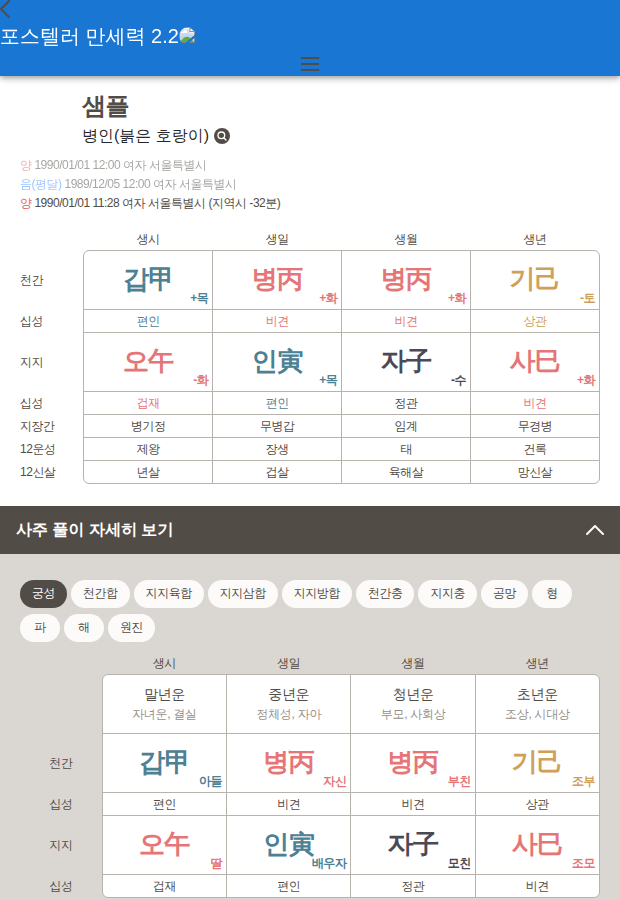
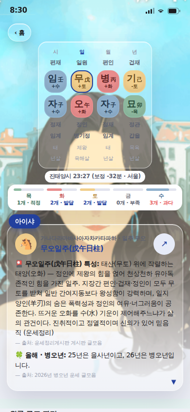
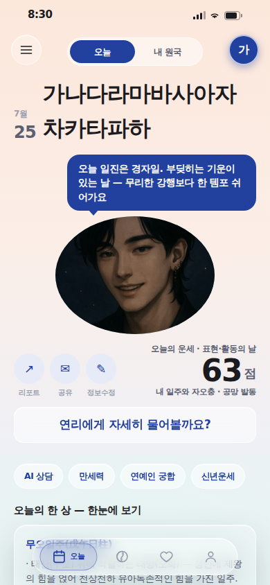
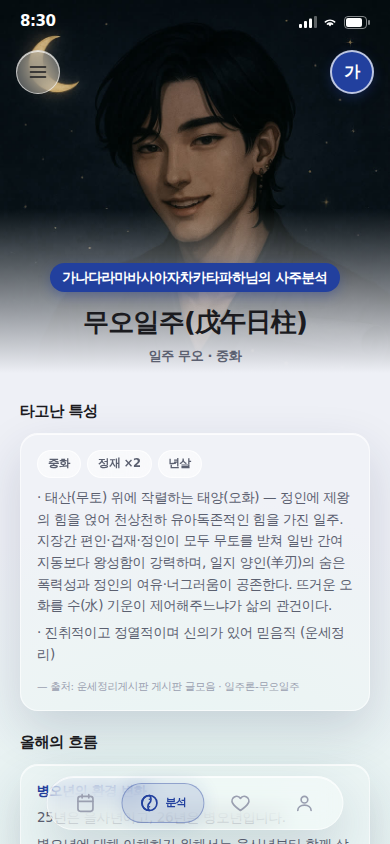
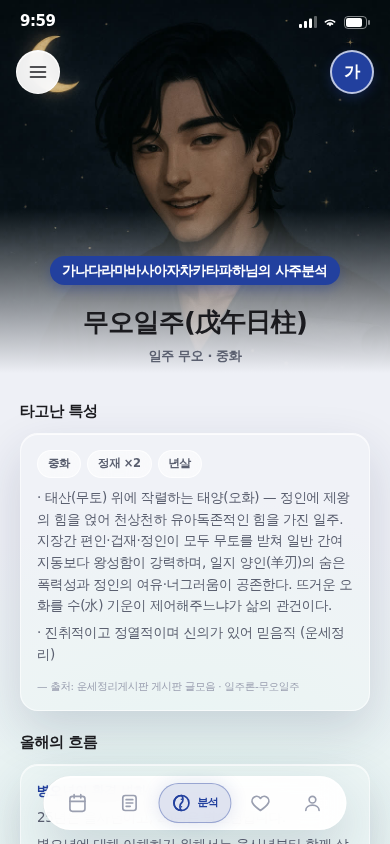
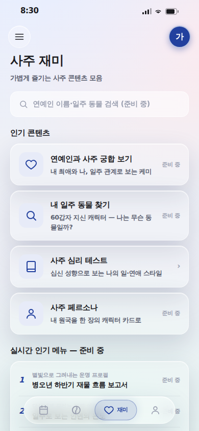
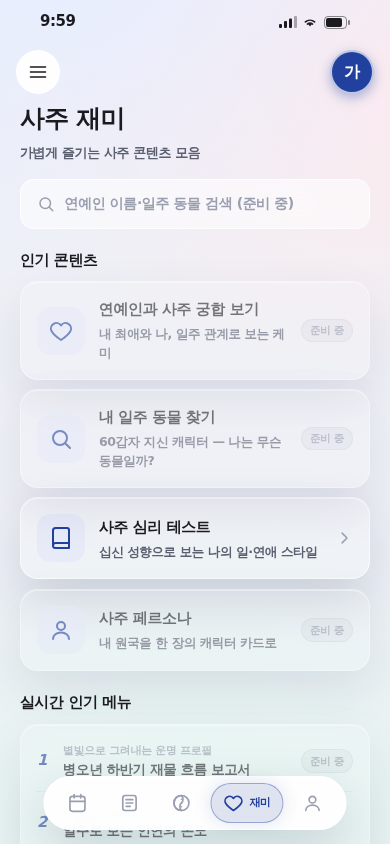
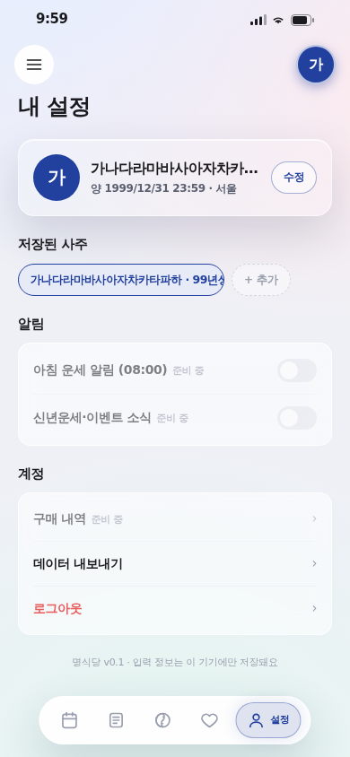
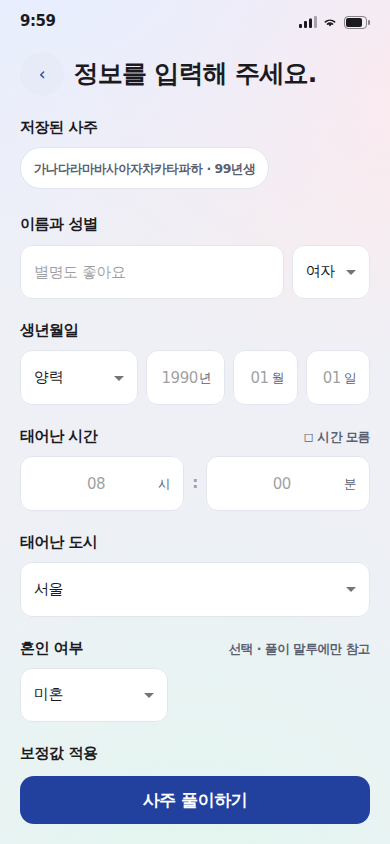

명식당 화면 재구성 — 전 / 후
2026-07-25 · 지시 [Q. 31] "인터넷에서 사주 앱 레퍼런스를 최대한 모은 다음 화면을 재구성"
아래 컷은 전부 실제 렌더 화면(헤드리스 390×844 · ?qa=1 최장명 대표데이터). 왼쪽 = 전, 오른쪽 = 후.
무엇이 바뀌었나 — 한 줄
레퍼런스가 공통으로 지키는 세 가지를 우리만 안 지키고 있었다: ① 콘텐츠 뒤에 사진을 깔지 않는다 ② 긴 리포트도 앱 껍데기 안에 둔다 ③ 만세력은 최상위 탭이다. 이 셋을 맞췄고, 값·색·부품은 목업 v2 정본을 그대로 썼다 — 새 색·새 값 창작 0.
1. 레퍼런스
1차 — 실렌더로 본 포스텔러 만세력
레포에 있던 스크랩(forceteller-ref/)의 자립 스냅샷을 헤드리스로 실제 렌더했다(문서 높이 5,829px). 코드 설명이 아니라 픽셀로 확인한 레퍼런스다.

배경은 웜 오프화이트 단색 — 콘텐츠 뒤에 사진이 없다. 원국 표는 행 라벨(천간·십성·지지·지장간·12운성·12신살)이 왼쪽에 고정된다. 섹션은 접이식 바 + 칩 필터.
2차 — 소비자 사주 앱 IA
| 앱 | 정보구조 관찰 |
|---|---|
| 포스텔러 | 오늘의 운세(점수·개운법) · 운세 캘린더(택일) · 46주제 · 12지신 · 신년운세 |
| 점신 | 오늘의 운세 → 시간대별 흐름 → 애정·금전·건강 → 인맥 보고서 → 1:1 상담 · 최신 업데이트 = "만세력 오픈" |
| 헬로우봇 | AI 챗봇 대화형 상담이 축 · 무료 200+ → 유료 상세 보고서 |
| 천을귀인 | 사주 계산 → 분석 → 대운/세운 → 일진 달력 → 궁합 · 만세력이 최상위 |
| 마이파이 | 단계가 끊기지 않는 설계 · 리포트형이 아니라 대화식 |
→ 우리 L4 도사 대화(대화식)는 방향이 맞다. 문제는 정보구조와 가독이었다.
2. 전 / 후
R1 · 리포트 — 사진 위 텍스트를 걷어냈다


전엔 --stage-scrim이 라이트에서 transparent라 보호막이 0이었고, 캐릭터 머리카락 위 회색 글자(지장간·12운성·12신살)가 안 읽혔다. 후엔 스테이지가 높이 300px을 갖고 끝난다 → 아래는 단색 위 = 스크림 없이 가독 성립. 이 마크업은 창작이 아니라 같은 레포 Analysis.tsx에서 이미 잘 돌던 것을 공용 부품으로 승격한 것이다. 덤으로 행 라벨이 붙어 7행이 뭐가 뭔지 보이고, 화자가 연리로, 얼굴이 남신 셰프로 통일됐다(전엔 아이샤 = 이름 3개·얼굴 2개).
R5 · 홈 — 긴 이름이 날짜를 덮지 않는다


한 행 flex-end 정렬을 세로 스택으로 바꿨다(포스텔러 결과 헤더 문법). 이름이 몇 줄이 되든 날짜를 밀지 않는다 — 겹침이 줄어든 게 아니라 구조가 사라졌다. 액션 아이콘도 문자(↗ ✉ ✎)에서 SVG 픽토그램으로 바뀌어 원 정중앙에 앉는다.
R3·R4 · 네비 — 탭 5개, 그리고 크롬이 크롬처럼


탭 4 → 5(오늘·원국·분석·재미·설정)로 드로어 5항목과 1:1이 됐다. '내 원국'이 탭에 없어 홈 세그먼트로만 들어가던 2중 문법을 없앴다(레퍼런스 3종 모두 만세력을 최상위에 둔다). 유리는 .28 → .92 + saturate(0) — 채도 0으로 뒤 색까지 차단(방식론 §3-c). blur는 유지해 유리감은 그대로.
R9 · 재미 — 눌러도 되는 것만 선명하게


SoonBadge 부품 + 카드 opacity .58 + aria-disabled가 한 쌍이 됐다. 활성 항목만 선명하고 SVG 셰브론이 붙는다. 랭킹 섹션은 행마다 '준비 중'을 3번 반복하지 않고 섹션을 흐리고 배지 하나만 둔다.
R10 · 설정·입력 — 최장 이름과 잘린 섹션



설정: minWidth:0 + 말줄임 · 저장칩 maxWidth 230(행 합계폭 315 → 296, 가용 350). 입력: 스크롤 하단 여백 16px → 40px로 진태양시·야자시 칩과 설명이 전부 보인다. 대운 레일 페이드도 14px → 28px(첫·마지막 타일이 반쪽 잘림으로 보였다).
3. 실측 재검
| 항목 | 전 | 후 |
|---|---|---|
| /result 플레이트 | aisha.png (여성) | chef-default.jpg = 레지스트리 단일 경유 |
| /result 이모지 | 🐴 🎴 🍀 (3종) | 🐴 (1종 · 띠 동물 = 일러스트 대기 폴백) |
| /result 문자 도형 | ‹ ↗ ▼ × (4종) | × (곱셈 표기)만 |
| 홈 이름↔날짜 | 43px 침범 | 구조 소멸(세로 스택) |
| 알약 네비 뒤 텍스트 | 알약 안쪽까지 읽힘 | 차단(실렌더 눈 확인) |
| 설정 저장칩 행 폭 | 315 / 가용 350 | 296 / 350 |
| 입력 마지막 섹션 | 잘려 라벨만 | 전부 보임 |
| 하단 탭 ↔ 드로어 | 4 vs 5 (불일치) | 5 vs 5 (1:1) |
| /result 이탈로 | 1개 (‹ 홈) | 5탭 + 드로어 |
⚠ 앞 청사진 수치 정정
- "알약 뒤 텍스트 3건"·"입력 CTA 뒤 가려진 요소 3건" 판정식은 x축을 안 보고 y구간 겹침만 봐서 과탐이었다. 이번엔 실렌더 눈 대조로 확정했다 — G1 게이트는 이 판정식을 픽셀 대비 샘플링으로 바꿔야 한다.
- 설정 "이름 중심Y 197 vs 수정 206 = 9px"은 결함이 아니었다. 이름(위)+캡션(아래) 2줄 스택의 이름 단독 중심과 버튼 중심을 비교한 잘못된 짝짓기다. 실제 결함은 최장 이름의 줄바꿈이었고 그건 고쳤다.
- 대운 레일 페이드는 없던 게 아니라 14px로 좁았다.
4. 남은 것
| 항목 | 상태 |
|---|---|
| 캐릭터 위계(연리 ↔ 셰프단) | 운영자 결정 코드는 단일 경유로 정리 · 위계는 Q.16 미확정 |
| 분석 ↔ 결과 층위 | 운영자 결정 목업 v2 9화면 정본을 깨는 선택이라 손대지 않음 |
입력 □ 시간 모름 · ✓ 진태양시 | 문자 체크박스 잔존 — 컨트롤 부품 신설 축이라 별건 |
| 로그인/가입 폼 문법 2종 | 로그인 = placeholder만 / 가입 = 섹션 라벨 |
대화 선택지 的中? 분기 | 플레이그라운드 정본(결정 로그) — 바꾸려면 운영자 확인 |
| 입력 3단 위저드(확인 단계) | 레퍼런스 공통 패턴인데 우리는 없음 — 신규 화면 추가 축 |
| G1~G3 기계 게이트 | 미구축 — 이번 수선이 회귀로 되살아나지 않게 하려면 필요 |